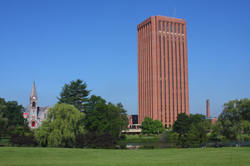

Conference
Venue

University of Massachusetts -
Amherst Campus
Web sites are great, but to really experience the University of
Massachusetts Amherst, you should plan to visit campus. Take a
student-led campus tour and attend an admissions information
session. Eat in the national award-winning Berkshire Dining Commons
and visit the Learning Commons in the W.E.B. DuBois Library. Take a
short walk to downtown Amherst, one of the best college towns in the
country. Come and experience firsthand the energy of UMass Amherst
and all it has to offer.
Where is
UMass Amherst? The
campus is located in Western Massachusetts, 90 miles from Boston and
175 miles from New York City. Find
the campus on Google maps.

Campus Tours
Campus Maps
Driving and Parking

Planes, Trains, and Buses
Five College Transportation